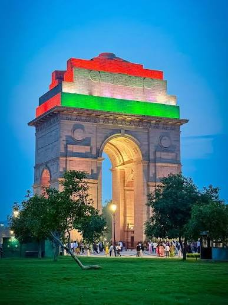

Profile
India is one of the oldest civilizations in the world with a ka leidoscopic variety and rich cultural heritage. It has achieved all-round socio-economic progess since Independence. As tge 7th largest country in the world, India stands apart from the rest of Asia, marked off as it is by mountains and the sea, which give the country a distinct goegraphical entity. Bounded by the Great Himalayas in the north, it streches southwards and at the Tropic of Cancer, tapers off into the Indian Ocean between the Bay of Bengal on the east and the Arabian Sea on the west.
Lying entirely in the northen hemisphere, the mainland extends between latitudes 8 degree 4' and 37 degree 6' north, longitudes 68 degree 7' and 97 degree 25' east and measure about 3214 km from north to south between the extreme laditudes and about 2933 km from east to west between the extreme longitudes. It has a land frontier of about 15200 km. The total length of the coastline of the mainland, Lakshadweep Islands and Andaman & Nicobar Islands is 7516.6 km.